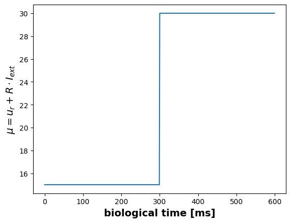
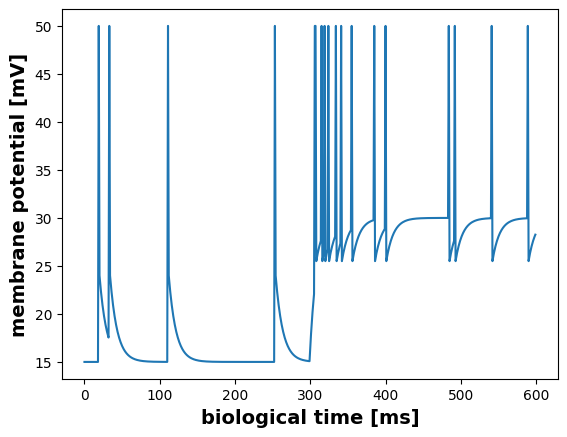
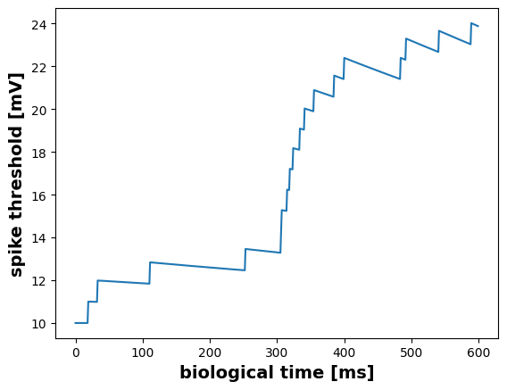
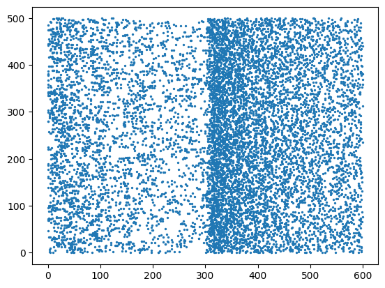
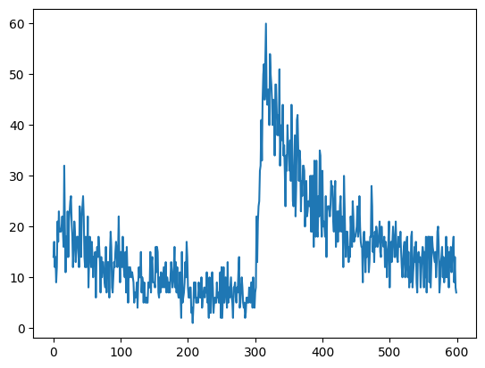
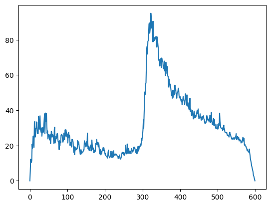

#!pip install ANNarchyGeneralized Integrate-and-Fire Neuron
This notebook explores the generalized Integrate-and-Fire neuron model being used for reproducing measured data.
Code based on:
Schwalger, T., Deger, M., Gerstner, w. (2017). Towards a theory of cortical columns: From spiking neurons to interacting neural populations of finite size. PLoS Comput Biol. 2017;13(4):e1005507
import matplotlib.pyplot as plt
import numpy
import ANNarchy as annANNarchy 5.0 (5.0.2) on linux (posix).The generalized Integrate-and-Fire (GIF) neuron is defined by the following equations:
\tau_m \frac{du}{dt} = -u + u_r + R*I_{ext}
\tau_v \frac{dv}{dt} = -(v-u_{th})
Spike emission is the result of a stochastic process, where the threshold \lambda, also called hazard-rate, follows the difference between the membrane potential u and an adaptive threshold v:
\lambda = c * exp(\frac{u-v}{\delta_{u}})
The GIF neuron model is pre-implemented in ANNarchy, but could be implemented like that.
GIF = ann.Neuron(
parameters = dict(
# membrane potential
C_m = 250.0,
tau_m = 10.0,
R = 0.04, # R = tau/C = 10ms / 250pA
# spiking behavior
tau_v = 1000.0,
J_v = 1000.0,
u_r = -65.0,
u_th = -50.0,
# escape rate
c = 10.0,
delta_u = 5.0,
# synaptic inputs
I_ext = 375.0
),
equations = [
# membrane potential
Variable(f"tau_m * du/dt = -u + u_r + R*I_ext {current}", init='u_r'),
# adaptive spike threshold, v is incremented by each spike, otherwise decays toward u_t
Variable("tau_v * dv/dt = -(v-u_th)", init='u_th'),
# escape rate in Hz, resp. spikes/s
Variable("Lambda = c * exp((u-v)/delta_u)"),
# Note: we need to map from ms -> s, that it fits to rate in Hz
Variable("p = Uniform(0.0, 1.0) * 1000.0 / dt"),
]
)However, for the following we want to use a different parameterization from the above mentioned article. This refers mainly to the value range for the membrane potential and consequently the spike threshold. However, the parameters can be easily changed:
net = ann.Network()
# we adapt some of the default parameters for this example
mod_GIF = ann.GIF_curr(
u_r = 25.0,
u_th = 10.0,
c = 10.0,
delta_u = 5.0,
I_ext = 0.0,
current = ""
)Using this adapted neuron type, we can now create our population:
# create the population
P = net.create(500, neuron=mod_GIF)
P.u = 15.0
# select only one neuron
m = net.monitor(P[15], ["u", "v", "spike"])
# record spikes of all neurons
m2 = net.monitor(P, "spike")
net.compile()Compiling network 1... OKModel Dynamics
A full description of the model can be found in the referenced article. For this notebook we want to take a short look on the model dynamics using two different input strengths. The first condition should result in a low activity, while the second condition leads to higher activity. Please remind, that this input current I_{ext} is the only input to the neurons in this notebook, as no connections exists between the neurons.
# just for logging
input_signal = numpy.zeros(600)
# -> mu = 15 mv
P.I_ext = (15 - P.u_r)/P.R
net.simulate(300)
input_signal[:300] = P.I_ext
# -> mu = 30 mv
P.I_ext = (30 - P.u_r)/P.R
net.simulate(300)
input_signal[300:] = P.I_extplt.figure()
plt.plot(P.u_r + P.R * input_signal)
plt.ylabel(r"$\mu = u_r + R \cdot I_{ext}$", fontsize=14, fontweight="bold")
plt.xlabel("biological time [ms]", fontsize=14, fontweight="bold")Text(0.5, 0, 'biological time [ms]')
Single Neuron Behavior
The below plot visualizes the membrane potential u of a single neuron.
plt.figure()
u_data = m.get("u")
spikes = m.get("spike")[15]
u_data[spikes] = 50 # arbitrary value to highlight the spike
plt.plot(u_data)
plt.ylabel("membrane potential [mV]", fontsize=14, fontweight="bold")
plt.xlabel("biological time [ms]", fontsize=14, fontweight="bold")Text(0.5, 0, 'biological time [ms]')
Contrary to the standard leaky Integrate-and-Fire neuron, the GIF model has an adaptive threshold v, which is incremented by each emitted spike event.
plt.figure()
v_data = m.get("v")
plt.plot(v_data)
plt.ylabel("spike threshold [mV]", fontsize=14, fontweight="bold")
plt.xlabel("biological time [ms]", fontsize=14, fontweight="bold")Text(0.5, 0, 'biological time [ms]')
Group of Neurons
spikes = m2.get("spike")t, n = m2.raster_plot(spikes)
plt.scatter(t, n, s=2)
For analysis we could either use a histogram depicting the amount of spikes in each time step,
fr = m2.histogram(spikes)
plt.plot(fr)
print(numpy.mean(fr[:300]))
print(numpy.mean(fr[300:]))10.623333333333333
21.946666666666665
or an moving average across a fixed time window, in this case one millisecond.
smooth_fr = m2.smoothed_rate(spikes, 1.0) # 1ms window
plt.plot(numpy.mean(smooth_fr, axis=0))